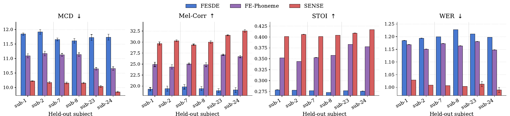

fig1.jpg
¹Chung-Ang University, South Korea · ²University of Birmingham, United Kingdom
* Work done during a research visit to the University of Birmingham. † Corresponding author.
Abstract
Reconstructing speech from non-invasive brain signals offers a promising pathway for restoring communication in individuals who are cognitively intact but unable to speak. Existing EEG-to-speech approaches formulate this task as acoustic reconstruction, optimizing waveform fidelity while ignoring whether the generated speech preserves high-level semantic content.
We revisit this formulation and argue that EEG signals carry not only acoustic but also semantic information. We identify two key limitations of prior methods: (1) the neglect of spatial relationships between EEG electrodes, and (2) the failure to exploit the semantic structure of the N400 paradigm, where congruent and incongruent trials reflect distinct semantic processing. We propose SENSE (Semantic-EEG Neural Speech SynthEsis), which combines a graph-based EEG encoder over electrode geometry with EEG Semantic Conditioning (ESC), aligning EEG to a pretrained semantic space using only congruent trials. On the N400 dataset, SENSE consistently outperforms prior methods on both acoustic and semantic metrics, and model-internal channel attribution suggests distributed reliance on auditory, sensorimotor, and centro-parietal regions, consistent with known speech-perception neuroscience. In the unseen-subject setting, SENSE trained on only two subjects already surpasses the strongest baseline trained on all eighteen subjects in word error rate, and matches it on acoustic metrics with as few as eight subjects.
Method
Each training example is a 128-channel EEG recording X, the sentence transcript c, and the recorded speech y. EEG is encoded into a latent M, which is mapped to the prior of a VITS speech decoder. During training M is further supervised by phoneme targets tokenized from c and by a frozen CLIP embedding of c. At inference time, only EEG is required — no text, and no guided sampling.

The three supervisory signals operate at distinct granularities — raw signal (ℒrecon), phonemes (ℒctc), and sentence-level meaning (ℒesc) — and are complementary: M must simultaneously support EEG reconstruction, phoneme prediction, and semantic alignment.
Audio samples
All samples below come from the unseen-subject split: the model never saw these participants during training, and generation is conditioned on EEG only — no text and no guided sampling. Transcriptions are produced by Whisper-large.
These are best-scoring examples. The first, third, and fourth are the same trials shown as mel-spectrograms in Figure 3 below.
“The old man walked with a cane.”
Whisper on SENSE output: “The old man walked with mutting.”
“On one hand I have five fingers.”
Whisper on SENSE output: “On one hand, I have five ears.”
“He liked to sit on the park bench.”
Whisper on SENSE output: “He lies to sit on the hard vans.”
“The angry boys got in a fight.”
Whisper on SENSE output: “The Angry Boys got in the fight.”
“He shut the door.”
Whisper on SENSE output: “He shust the poor.”
“He wore a cast because his arm broke.”
Whisper on SENSE output: “He wore a bass, he does his arm up”
Qualitative comparison

Results · N400 corpus
We evaluate on the N400 EEG corpus (20 subjects, 128-channel EEG at 512 Hz) under three test conditions: Unseen audio (training subjects, held-out sentences), Unseen subject (held-out subjects, training sentences), and Unseen both. Acoustic fidelity is measured by MCD, Mel-Correlation, and STOI; semantic consistency by WER (Whisper-large), BERTScore, and CLIP-Sim. Semantic metrics are computed on congruent trials only, since incongruent trials are designed to violate sentence-final expectation. All results are averaged over five seeds.
Table 1: End-to-end EEG-to-speech models across three evaluation conditions
| Model | Split | MCD ↓ | Mel-Corr ↑ | STOI ↑ | WER ↓ | BERTScore ↑ | CLIP-Sim ↑ |
|---|---|---|---|---|---|---|---|
| FESDE | Both | 11.80 ±0.12 | 19.87 ±1.97 | 0.2785 | 1.2186 | 0.8377 | 0.7657 |
| FE-Phoneme | Both | 10.52 ±0.08 | 28.29 ±1.34 | 0.3979 | 1.1610 | 0.8385 | 0.7509 |
| SENSE | Both | 10.44 ±0.10 | 31.18 ±0.60 | 0.3996 | 1.0186 | 0.8456 | 0.7654 |
| FESDE | Audio | 11.71 ±0.04 | 19.14 ±0.47 | 0.2792 | 1.2125 | 0.8361 | 0.7601 |
| FE-Phoneme | Audio | 10.73 ±0.06 | 26.53 ±0.30 | 0.3918 | 1.1360 | 0.8414 | 0.7554 |
| SENSE | Audio | 10.44 ±0.01 | 28.50 ±0.24 | 0.4039 | 1.0375 | 0.8474 | 0.7601 |
| FESDE | Subject | 11.73 ±0.04 | 18.70 ±0.29 | 0.2744 | 1.2171 | 0.8358 | 0.7587 |
| FE-Phoneme | Subject | 10.65 ±0.02 | 26.90 ±0.08 | 0.3806 | 1.1231 | 0.8407 | 0.7555 |
| SENSE | Subject | 9.928 ±0.03 | 32.07 ±0.14 | 0.4126 | 0.9948 | 0.8496 | 0.7647 |
SENSE outperforms both baselines across all splits and metrics, with the largest gains on the unseen-subject split — indicating that it learns representations which generalize across participants rather than relying on subject-specific cues. Absolute WER values near 1 nonetheless show that intelligibility-level reconstruction from EEG remains an open challenge.
Cross-subject generalization
We scale the number of training subjects k and evaluate on a fixed held-out pair (sub-23, sub-24). Because evaluation is always on unseen subjects, these curves reflect cross-subject generalization rather than in-distribution scaling.


Ablation · Unseen-subject split
Each row removes one component from the full model. Removing ESC degrades the semantic metrics; removing CTC causes an even larger increase in WER, indicating that phoneme-level supervision also preserves intelligibility. The spatial components (channel attention, GNN, CNN skip) contribute consistently to both acoustic and semantic quality.
Table 2: Component ablation (unseen-subject split)
| Model | Ch.Att | GNN | CNN Skip | CTC | ESC | MCD ↓ | Mel-Corr ↑ | STOI ↑ | WER ↓ | BERT ↑ | CLIP-Sim ↑ |
|---|---|---|---|---|---|---|---|---|---|---|---|
| SENSE | ✓ | ✓ | ✓ | ✓ | ✓ | 9.93 ±0.03 | 32.07 ±0.14 | 0.4126 | 0.9948 | 0.8496 | 0.7647 |
| w/o ESC | ✓ | ✓ | ✓ | ✓ | ✗ | 10.34 ±0.03 | 29.43 ±0.27 | 0.4016 | 1.0323 | 0.8441 | 0.7601 |
| w/ shuffled ESC | ✓ | ✓ | ✓ | ✓ | shuf. | 10.38 ±0.04 | 29.25 ±0.28 | 0.4002 | 1.0385 | 0.8434 | 0.7595 |
| w/o CTC | ✓ | ✓ | ✓ | ✗ | ✓ | 10.50 ±0.01 | 27.24 ±0.27 | 0.3721 | 1.0488 | 0.8412 | 0.7624 |
| w/o CNN Skip | ✓ | ✓ | ✗ | ✓ | ✓ | 10.40 ±0.01 | 29.64 ±0.25 | 0.3970 | 1.0306 | 0.8434 | 0.7579 |
| w/o GNN | ✓ | ✗ | ✗ | ✓ | ✓ | 10.11 ±0.02 | 29.54 ±0.22 | 0.3951 | 1.0355 | 0.8445 | 0.7577 |
| w/o Ch.Att | ✗ | ✓ | ✓ | ✓ | ✓ | 10.24 ±0.01 | 29.08 ±0.16 | 0.4046 | 1.0170 | 0.8469 | 0.7639 |
Does ESC exploit genuine EEG–semantic correspondence, or just act as generic regularization? The shuffled ESC row keeps the same loss and conditioning bridge but randomly permutes CLIP targets within each batch. It performs slightly worse than removing ESC entirely, confirming that the gain depends on correct semantic targets rather than on auxiliary supervision alone.
Table 3: Adding ESC to baseline encoders
| Backbone | ESC | MCD ↓ | Mel-Corr ↑ | STOI ↑ | WER ↓ | BERTScore ↑ | CLIP-Sim ↑ |
|---|---|---|---|---|---|---|---|
| FESDE | ✓ | 10.93 ±0.03 | 26.27 ±0.19 | 0.363 | 1.084 | 0.839 | 0.7500 |
| FE-Phoneme | ✓ | 10.04 ±0.02 | 31.17 ±0.21 | 0.411 | 1.102 | 0.843 | 0.7544 |
| SENSE | ✓ | 9.93 ±0.03 | 32.07 ±0.14 | 0.413 | 0.995 | 0.850 | 0.7647 |
Both baselines improve when ESC is added, but remain consistently below SENSE — semantic conditioning complements rather than replaces the SENSE encoder.
Table 4: Graph adjacency structures
| Model | Graph topology | CNN Skip | MCD ↓ | Mel-Corr ↑ | STOI ↑ | WER ↓ |
|---|---|---|---|---|---|---|
| SENSE | BioSemi topo | ✓ | 9.93 ±0.03 | 32.07 ±0.14 | 0.4126 | 0.9948 |
| GNN (topo, no skip) | BioSemi topo | ✗ | 10.40 ±0.02 | 29.64 ±0.25 | 0.3970 | 1.0306 |
| GNN (GAT attn.) | BioSemi topo | ✗ | 10.21 ±0.03 | 29.10 ±0.10 | 0.3835 | 1.0183 |
| GNN (fully-conn.) | Fully connected | ✗ | 10.96 ±0.05 | 26.17 ±0.27 | 0.3684 | 1.0945 |
| GNN (random) | Random | ✗ | 10.67 ±0.03 | 27.15 ±0.18 | 0.3803 | 1.0806 |
The anatomy-derived BioSemi topology beats learnable GAT, fully-connected, and random adjacencies: local distance-based connectivity is the relevant inductive bias. Learning the graph from only 7,200 training pairs is under-constrained, while removing structure entirely is more harmful still.
Table 5: Semantic encoder for the ESC alignment target
| Semantic encoder | MCD ↓ | Mel-Corr ↑ | STOI ↑ | WER ↓ | BERTScore ↑ |
|---|---|---|---|---|---|
| SBERT | 10.06 ±0.01 | 30.25 ±0.09 | 0.399 | 1.011 | 0.847 |
| CLAP | 10.02 ±0.04 | 29.62 ±0.21 | 0.388 | 1.013 | 0.846 |
| CLIP | 9.93 ±0.03 | 32.07 ±0.14 | 0.413 | 0.995 | 0.850 |

Analysis
The channel attention gate is warm-started with a positive bias toward auditory-related electrodes and zero elsewhere — no prior is placed on sensorimotor or centro-parietal regions, so the patterns below emerge from training rather than design. After training, auditory-prior channels are modestly down-weighted while central electrodes (C3, C4) and frontal-central regions gain importance.

The prominence of C3/C4, which are not favored by design, is consistent with prior findings that speech perception engages sensorimotor cortex during passive listening. We read these maps as model-internal diagnostics, not evidence of neural sources, given the known limitations of saliency-based attribution — but they do support the central hypothesis that EEG-to-speech generation benefits from non-auditory channels.
Limitations & broader impact
Citation
@inproceedings{park2026sense,
title = {SENSE: Semantic Neural Speech Synthesis from Brain
Dynamics via Spatial Graph Encoding},
author = {Park, Jisoo and Lee, Seonghak and Park, Hyojin and
Kwon, Junseok},
booktitle = {Advances in Neural Information Processing Systems (NeurIPS)},
year = {2026}
}